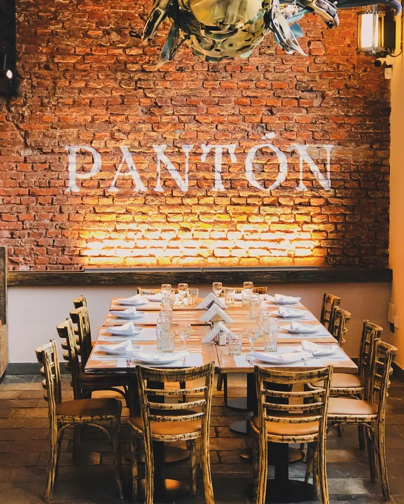
Abierto todos los días de 7:00 a 01:00 hs
Cocina gallega de bodegón
Porciones para compartir en la esquina de Bucarelli y La Pampa.Tortilla, huevos rotos, pesca del día y postres caseros, en porciones para compartir. Un homenaje a Pantón, el pueblo de la Ribeira Sacra de donde vino la familia.
Salió en Clarín · Canal 26 · C5N · LN+
De 7:00 a 01:00 hs, todos los días
Pasá a cualquier hora
Pantón abre con el café y cierra con la sobremesa. Arrastrá la agujaTocá cada momento para ver qué te espera.
Ahora en Pantón
Cena
Cazuelas al centro, vino y sobremesa larga.
Cocina de bodegón
La carta
Pedí a casa o pasá a buscar: armás la comanda acá y te llega armada al WhatsApp del bodegón. La misma carta está en el QR de las mesas.
Abrir la carta del QRCargando la carta…
Platos para compartir
Armá la mesa
Arrastrá las cazuelas al mantelTocá «A la mesa» en cada cazuela y armá la comanda para compartir. Cuando esté lista, pedila a casa o reservá y comela acá.
El mantel está listo. Soltá acá las cazuelas.Sumá cazuelas con «A la mesa».
0 platos para el centro
Mesas largas, festejos y sobremesa
Reservá tu mesa
Elegí día, horario y cuántos son. Pantón la ve al instante en su panel y te confirma por WhatsApp, sin esperar a que alguien conteste el teléfono.
- Almuerzo12:00 a 14:30 hs
- Cena20:00 a 23:00 hs
- Gruposhasta 20 personas por la web
Delivery propio y para llevar
Pantón en tu casa
El mismo WhatsApp de siempre, pero con la comanda armada: sin dictar platos ni repetir la dirección.
- 1
Armás la comanda
Elegís de la carta o del mantel, con cantidades y aclaraciones.
- 2
Llega armada al WhatsApp
Pantón recibe el pedido con tu nombre, la dirección y si pasás a buscar.
- 3
Te confirman y sale
Te escriben con el precio, el envío según tu zona y la demora.
Un homenaje a nuestro origen
De Pantón a Villa Urquiza
Pantón es un pueblo de la Ribeira Sacra, en Lugo (Galicia), donde nacieron la madre y los abuelos de la familia. Pasá el mouseTocá cada punto del camino.
«Queremos recrear aquí parte desas experiencias de mesas con amigos e familiares con boa comida e regadas con bo viño e o espírito galego de hospitalidade e alegría.»
Queremos recrear acá esas mesas con amigos y familia, con buena comida, buen vino y el espíritu gallego de hospitalidad y alegría.
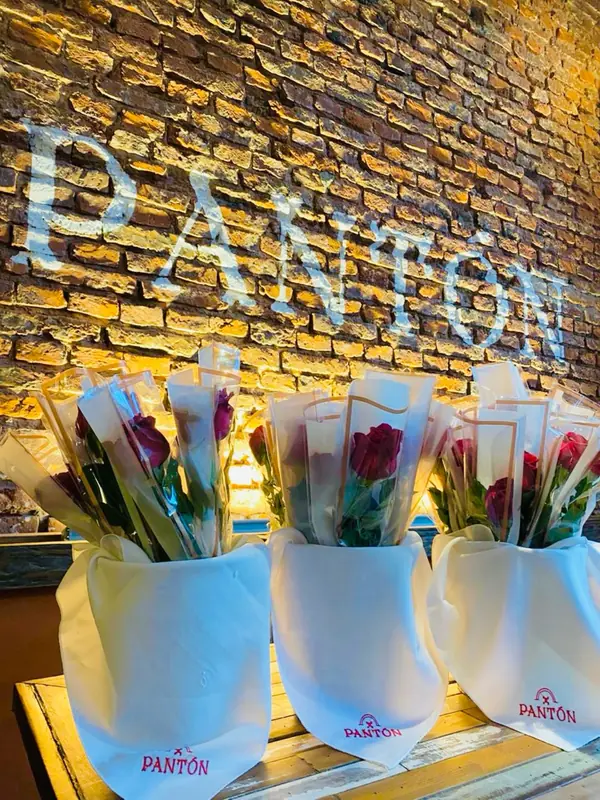
Lo que se dijo de Pantón
Salió en los diarios
En poco más de un año, el bodegón de la esquina pasó por los diarios y la tele. Pasá el mouse por cada recorte.Deslizá los recortes.
- Clarín
La revancha de los bodegones: los restoranes que son la «resistencia» en tiempos de crisis para salir a comer afuera
Porciones para compartir y precios más bajos.
Ver la nota - Canal 26
Queda en Villa Urquiza: el bodegón que honra la tradición de Galicia ofreciendo una experiencia familiar y accesible
«La tradición gallega se fusiona con el espíritu del bodegón porteño a precio amigo.» · 5 de septiembre de 2025
Ver la nota - C5N
Nota en el bodegón: porciones abundantes y la mejor calidad
Ver el video - Canal de la Ciudad
Visita y nota en Pantón, el bodegón de Villa Urquiza
Ver el video - LN+
Horacio Cabak y su equipo, de visita en el bodegón gallego por el Día del Padre
Ver el video
Libro de visitas
Firmaron en Pantón
Actores, periodistas, ídolos del fútbol y vecinos de siempre. Cada firma lleva a la foto de su visita en el Instagram del bodegón.
Pantón · Villa Urquiza
- Martín Bossiartista
- Marcelo Subiottoactor
- Carlos Babingtonídolo de Huracán
- Karin Cohenperiodista
- Walter Nelsonperiodista y relator
- Caruso Lombardivecino de Urquiza
- Pancho Ferrarodirector técnico
- Bocha BatistaDT de Venezuela
- Darío Lopilatoactor
- Gabriel Calderónex Selección
- Beto Carranzaex San Lorenzo
- Horacio CabakLN+
… y los vecinos que vuelven cada semana.
Ladrillo, cazuelas y mesas largas
Así se ve un sábado
Pasá las fotos con el dedo.Arrastrá la fila para ver más.
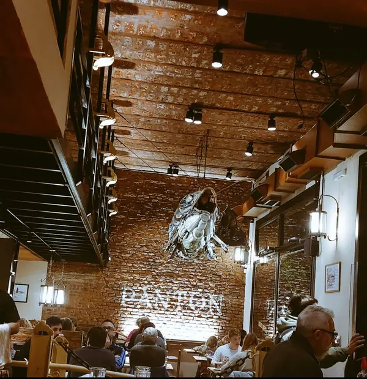
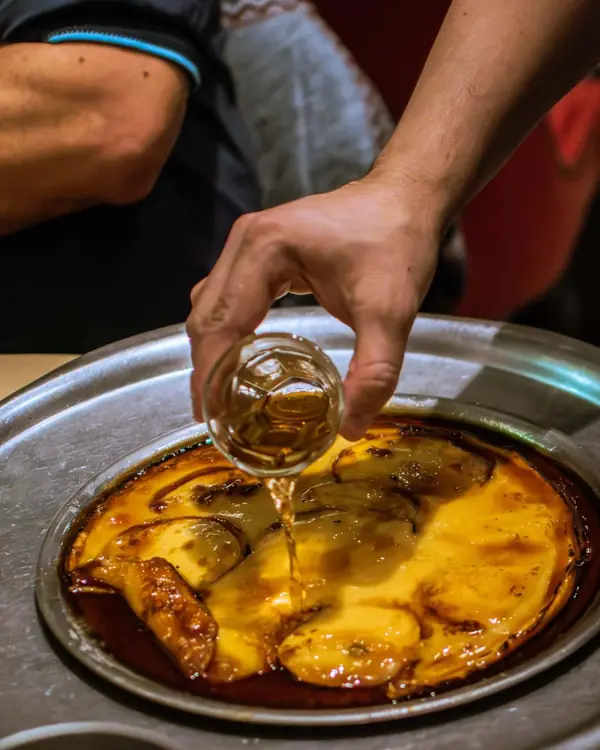
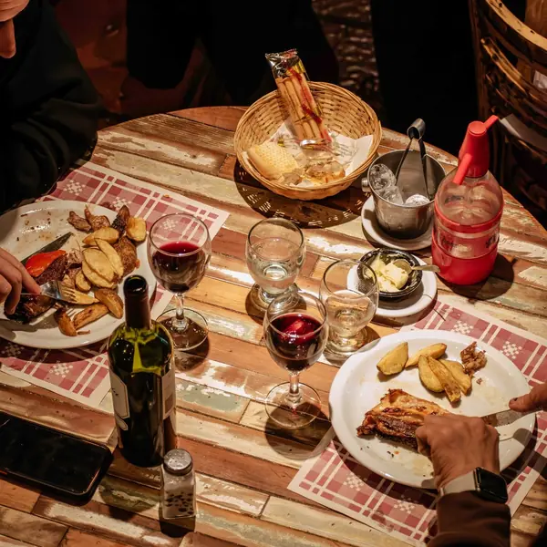
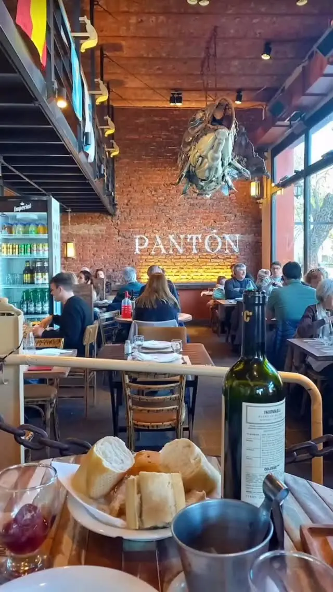
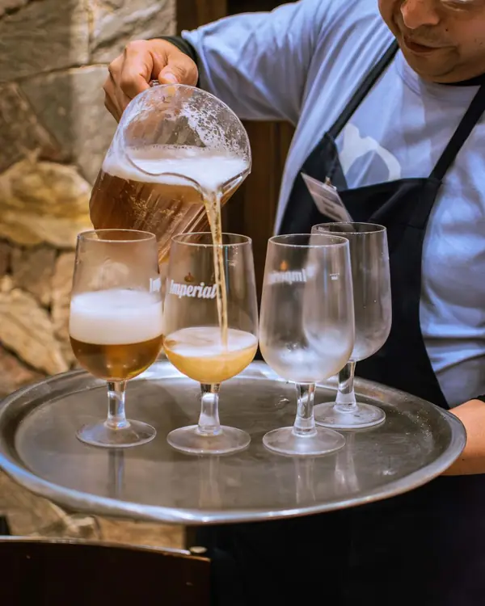
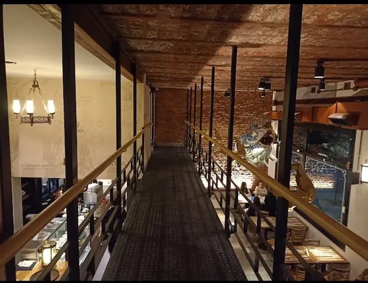
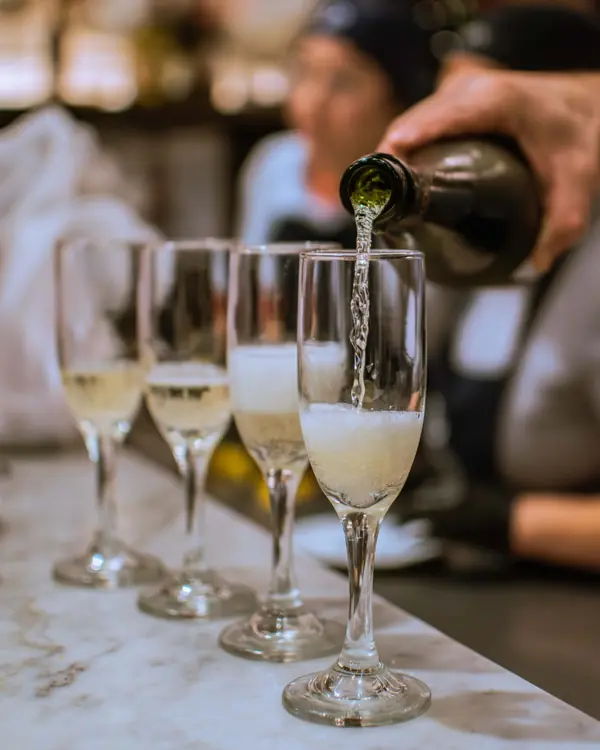
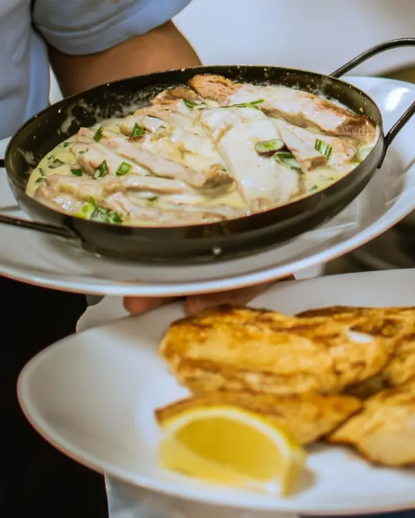
La esquina de Pampa y Bucarelli
Cómo llegar
Bucarelli 1801, esquina La Pampa
Villa Urquiza, en el límite con Parque Chas.
Abierto todos los días
Reservas y delivery: 11 3159-5666
¿Sos de Pantón? Probá el panel del dueño →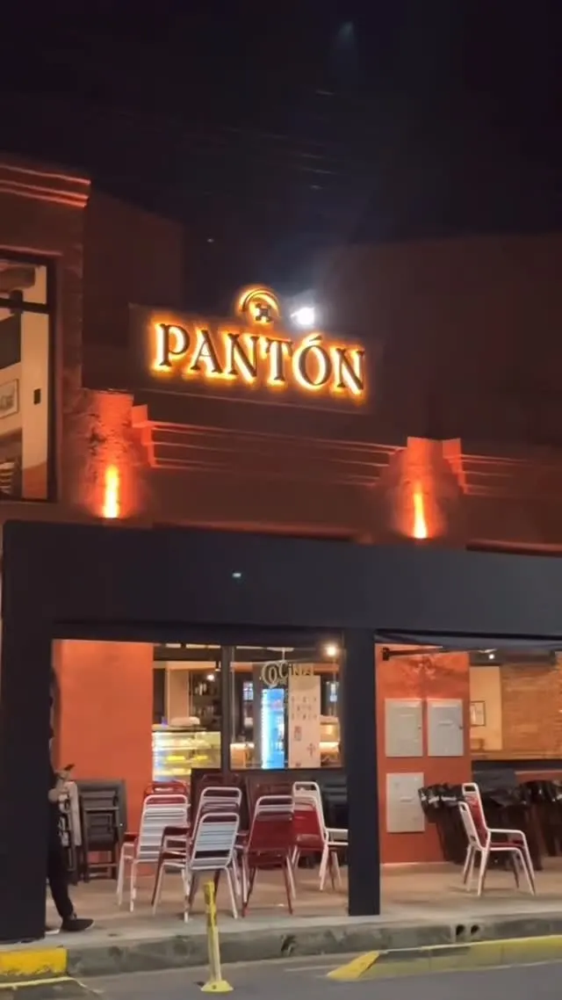